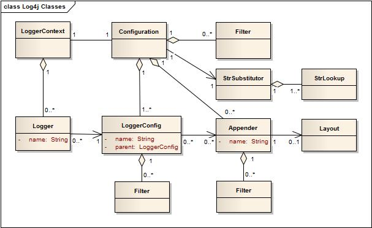

<!DOCTYPE html>
<html>
<head><meta name="generator" content="Hexo 3.9.0">
  <meta charset="utf-8">
  
  <title>日志问题 | 守株阁</title>
  <meta name="viewport" content="width=device-width, initial-scale=1, maximum-scale=1">
  <meta name="description" content="Log4j 的架构设计 http://www.cnblogs.com/Fskjb/archive/2011/01/29/1947592.htmlhttps://blog.csdn.net/qq_35246620/article/details/53790350https://blog.csdn.net/liuxiao723846/article/details/52126936 依赖&amp;lt;dep">
<meta name="keywords" content="SLF4j,Logback,Log4j">
<meta property="og:type" content="article">
<meta property="og:title" content="日志问题">
<meta property="og:url" content="http://yoursite.com/2018/11/25/日志问题/index.html">
<meta property="og:site_name" content="守株阁">
<meta property="og:description" content="Log4j 的架构设计 http://www.cnblogs.com/Fskjb/archive/2011/01/29/1947592.htmlhttps://blog.csdn.net/qq_35246620/article/details/53790350https://blog.csdn.net/liuxiao723846/article/details/52126936 依赖&amp;lt;dep">
<meta property="og:locale" content="zh-Hans">
<meta property="og:image" content="http://yoursite.com/2018/11/25/日志问题/Log4jClasses.jpg">
<meta property="og:updated_time" content="2020-08-02T05:32:38.853Z">
<meta name="twitter:card" content="summary">
<meta name="twitter:title" content="日志问题">
<meta name="twitter:description" content="Log4j 的架构设计 http://www.cnblogs.com/Fskjb/archive/2011/01/29/1947592.htmlhttps://blog.csdn.net/qq_35246620/article/details/53790350https://blog.csdn.net/liuxiao723846/article/details/52126936 依赖&amp;lt;dep">
<meta name="twitter:image" content="http://yoursite.com/2018/11/25/日志问题/Log4jClasses.jpg">
  
    <link rel="alternate" href="/atom.xml" title="守株阁" type="application/atom+xml">
  
  
    <link rel="icon" href="/favicon.png">
  
  
  <link rel="stylesheet" href="/css/style.css">
  

</head>
</html>
<body>
  <div id="container">
    <div id="wrap">
      <header id="header">
  <div id="banner"></div>
  <div id="header-outer" class="outer">
    
    <div id="header-inner" class="inner">
      <nav id="sub-nav">
        
          <a id="nav-rss-link" class="nav-icon" href="/atom.xml" title="RSS Feed"></a>
        
        <a id="nav-search-btn" class="nav-icon" title="搜索"></a>
      </nav>
      <div id="search-form-wrap">
        <form action="//google.com/search" method="get" accept-charset="UTF-8" class="search-form"><input type="search" name="q" class="search-form-input" placeholder="Search"><button type="submit" class="search-form-submit">&#xF002;</button><input type="hidden" name="sitesearch" value="http://yoursite.com"></form>
      </div>
      <nav id="main-nav">
        <a id="main-nav-toggle" class="nav-icon"></a>
        
          <a class="main-nav-link" href="/">首页</a>
        
          <a class="main-nav-link" href="/archives">归档</a>
        
          <a class="main-nav-link" href="/about">关于</a>
        
      </nav>
      
    </div>
    <div id="header-title" class="inner">
      <h1 id="logo-wrap">
        <a href="/" id="logo">守株阁</a>
      </h1>
      
        <h2 id="subtitle-wrap">
          <a href="/" id="subtitle">一切都是守株待兔，如切如磋，如琢如磨。I am just joking.</a>
        </h2>
      
    </div>
  </div>
</header>
      <div class="outer">
        <section id="main"><article id="post-日志问题" class="article article-type-post" itemscope itemprop="blogPost">
  <div class="article-meta">
    <a href="/2018/11/25/日志问题/" class="article-date">
  <time datetime="2018-11-25T08:04:21.000Z" itemprop="datePublished">2018-11-25</time>
</a>
    
  </div>
  <div class="article-inner">
    
    
      <header class="article-header">
        
  
    <h1 class="article-title" itemprop="name">
      日志问题
    </h1>
  

      </header>
    
    <div class="article-entry" itemprop="articleBody">
      
        <!-- Table of Contents -->
        
        <h1 id="Log4j-的架构设计"><a href="#Log4j-的架构设计" class="headerlink" title="Log4j 的架构设计"></a>Log4j 的架构设计</h1><p></p>
<p><a href="http://www.cnblogs.com/Fskjb/archive/2011/01/29/1947592.html" target="_blank" rel="noopener">http://www.cnblogs.com/Fskjb/archive/2011/01/29/1947592.html</a><br><a href="https://blog.csdn.net/qq_35246620/article/details/53790350" target="_blank" rel="noopener">https://blog.csdn.net/qq_35246620/article/details/53790350</a><br><a href="https://blog.csdn.net/liuxiao723846/article/details/52126936" target="_blank" rel="noopener">https://blog.csdn.net/liuxiao723846/article/details/52126936</a></p>
<h1 id="依赖"><a href="#依赖" class="headerlink" title="依赖"></a>依赖</h1><pre><code class="xml">&lt;dependencies&gt;
  &lt;dependency&gt;
    &lt;groupId&gt;org.apache.logging.log4j&lt;/groupId&gt;
    &lt;artifactId&gt;log4j-api&lt;/artifactId&gt;
    &lt;version&gt;2.13.3&lt;/version&gt;
  &lt;/dependency&gt;
  &lt;dependency&gt;
    &lt;groupId&gt;org.apache.logging.log4j&lt;/groupId&gt;
    &lt;artifactId&gt;log4j-core&lt;/artifactId&gt;
    &lt;version&gt;2.13.3&lt;/version&gt;
  &lt;/dependency&gt;
&lt;/dependencies&gt;
</code></pre>
<p>如果要接入其他日志库、Servlet、JPA，docker，可以使用<a href="http://logging.apache.org/log4j/2.x/maven-artifacts.html#Optional_Components" target="_blank" rel="noopener">《Optional Components》</a>。 使用了可选的组件以后，第一可以自动地在某些 api 里打点，其次可以自动理解这些 api 里的环境（如 docker api 可以自动理解 docker 的容器名称）。</p>
<h1 id="Logger、Appender"><a href="#Logger、Appender" class="headerlink" title="Logger、Appender"></a>Logger、Appender</h1><p>对于常见的 log4j.xml/slf4j.xml 而言：</p>
<p>Logger：日志记录器，负责收集处理日志记录。有 name，这个 name 可以被 java class 定义，也可以被引用。它本身没什么用，真正的配置被包在 LoggerConfig 里面。基本的实现在 AbstractLogger 里。</p>
<p>LoggerConfig 里面包含了一系列 Filter 的配置，会在 LogEvent 发送到 Appender 以前进行处理。</p>
<p>Appender：日志追加器，输出目的地（output destination），负责日志的输出（输出到什么地方）。有 name，这个 name 可以被引用。是一个很重要的功能接口。Logger ref appender。</p>
<p>Layout：日志布局。日志格式化，负责对输出的日志格式化（以什么形式展现）。复杂的布局性能会更差-复杂的任何处理器的性能都应该更差，无关紧要。</p>
<p>一个 logger 可以对应多个 appender，一个 appender 只能对应一个 layout。</p>
<p>rootlogger 总是 DEBUG 的 LEVEL。</p>
<p>默认其他 logger 都是从 root logger 里面派生出来的，主要继承了全局的 log level（<code>&lt;root level=&quot;warn&quot;&gt;</code>会直接导致全局的 log level 提升到 warn），而它的additivity 的配置可以禁掉日志在父 logger 里面的重复输出（Once an event reaches a logger with its additivity set to false the event will not be passed to any of its parent loggers, regardless of their additivity setting.日志会在当前的 logger 引用的 appender 里输出，而不会输出到 parent 上）。一套 logger 的例子是：</p>
<pre><code class="xml">&lt;loggers&gt;
        &lt;!--单独配置 logger，如果一个类的包路径很特别，需要单独定制 logger 的配置，可以这样做，配置单独的 level。单一的 logger 本身只是对 root level 的一个覆盖。--&gt;
        &lt;logger name=&quot;com.some_company&quot; level=&quot;info&quot;/&gt;
        &lt;logger name=&quot;org.springframework&quot; level=&quot;info&quot;/&gt;

        &lt;!-- 只规定了全局的 log level，所有没有被单独配置的 logger 都会受这个 logger 的影响，包括对 appender 的引用 --&gt;
        &lt;root level=&quot;info&quot;&gt;
            &lt;appender-ref ref=&quot;requestLog&quot;/&gt;
            &lt;appender-ref ref=&quot;warnLog&quot;/&gt;
            &lt;appender-ref ref=&quot;errorLog&quot;/&gt;
            &lt;appender-ref ref=&quot;customAppender1&quot;/&gt;
            &lt;appender-ref ref=&quot;customAppender2&quot;/&gt;
        &lt;/root&gt;
    &lt;/loggers&gt;
</code></pre>
<p>假设定义一个 APPENDER 是这样的。它与某个 log file 就联系起来了。</p>
<pre><code class="xml">    &lt;appender name=&quot;A-APPENDER&quot;
              class=&quot;class&quot;&gt;
        &lt;param name=&quot;file&quot; value=&quot;${loggingRoot}/${sys_host_name}/common-default.log&quot;/&gt;
        &lt;param name=&quot;append&quot; value=&quot;true&quot;/&gt;
        &lt;param name=&quot;encoding&quot; value=&quot;GBK&quot;/&gt;
        &lt;layout class=&quot;org.apache.log4j.PatternLayout&quot;&gt;
            &lt;param name=&quot;ConversionPattern&quot;
                   value=&quot;%d [%X{loginUserEmail}/%X{loginUserID}/%X{remoteAddr}/%X{clientId} - %X{requestURIWithQueryString}] %-5p %c{2} - %m%n&quot;/&gt;
        &lt;/layout&gt;
    &lt;/appender&gt;
</code></pre>
<p>其中 ConversionPattern 可用的内容有（<strong>这里的 % 不是类型前缀，而是上下文变量前缀。</strong>）：</p>
<ul>
<li>%d 意味着当前时间</li>
<li>%m 意味着日志内容</li>
<li>%n 意味着换行符</li>
</ul>
<p>然后可以定义一个 logger：</p>
<pre><code class="xml">&lt;!-- 用appender 的名字或者日志文件名来命名 logger --&gt;
&lt;logger name=&quot;LOGGING_FILE_NAME&quot; additivity=&quot;false&quot;&gt;
    &lt;level value=&quot;INFO&quot;/&gt;
    &lt;appender-ref ref=&quot;A-APPENDER&quot;/&gt;
    &lt;appender-ref ref=&quot;B-APPENDER&quot; /&gt;
&lt;/logger&gt;
</code></pre>
<p>然后可以用名字来引用 logger：</p>
<pre><code class="java">    private static final Logger LOGGING_FILE_NAME_LOGGER = LoggerFactory.getLogger(LOGGING_FILE_NAME);
</code></pre>
<p>我们也可以定义一个到达某个包名的 logger：</p>
<pre><code class="xml">    &lt;!-- 用包名来命名 logger，本包内的 class 自动获得这个 logger --&gt;
    &lt;logger name=&quot;com.a.b&quot; additivity=&quot;false&quot;&gt;
        &lt;!-- 可以覆盖继承下来的 level --&gt;
        &lt;level value=&quot;${abc_loggingLevel}&quot;/&gt;
        &lt;appender-ref ref=&quot;A-APPENDER&quot;/&gt;
        &lt;appender-ref ref=&quot;B-APPENDER&quot; /&gt;
    &lt;/logger&gt;
</code></pre>
<p>然后可以用类名来引用 logger：</p>
<pre><code class="java">    private static final Logger logger = LoggerFactory.getLogger(A.class);
</code></pre>
<p>一个典型的 log4j2.xml：</p>
<pre><code class="xml">&lt;?xml version=&quot;1.0&quot; encoding=&quot;UTF-8&quot;?&gt;
&lt;Configuration status=&quot;warn&quot; name=&quot;MyApp&quot; packages=&quot;&quot;&gt;
  &lt;Appenders&gt;
    &lt;!-- 可以直接用 type 来决定特殊的 console --&gt;
    &lt;Console name=&quot;STDOUT&quot; target=&quot;SYSTEM_OUT&quot;&gt;
      &lt;PatternLayout pattern=&quot;%m%n&quot;/&gt;
    &lt;/Console&gt;
     &lt;File name=&quot;MyFile&quot; fileName=&quot;logs/app.log&quot;&gt;
      &lt;PatternLayout&gt;
        &lt;Pattern&gt;%d %p %c{1.} [%t] %m%n&lt;/Pattern&gt;
      &lt;/PatternLayout&gt;
    &lt;/File&gt;
  &lt;/Appenders&gt;
  &lt;Loggers&gt;
    &lt;Root level=&quot;error&quot;&gt;
      &lt;AppenderRef ref=&quot;STDOUT&quot;/&gt;
    &lt;/Root&gt;
  &lt;/Loggers&gt;
&lt;/Configuration&gt;
</code></pre>
<p>一个典型的logback.xml：</p>
<pre><code class="xml">&lt;appender name=&quot;console&quot; class=&quot;ch.qos.logback.core.ConsoleAppender&quot;&gt;
        &lt;!-- 注意这个 target --&gt;
        &lt;target&gt;System.out&lt;/target&gt;
        &lt;encoder&gt;
            &lt;pattern&gt;%d{HH:mm:ss.SSS} [%thread] %-5level %logger{36} %msg%n&lt;/pattern&gt;
        &lt;/encoder&gt;
    &lt;/appender&gt;

    &lt;root level=&quot;error&quot;&gt;
        &lt;appender-ref ref=&quot;console&quot;/&gt;
    &lt;/root&gt;


&lt;?xml version=&quot;1.0&quot; encoding=&quot;UTF-8&quot;?&gt;
&lt;configuration debug=&quot;true&quot;&gt;
  &lt;!-- 应用名称 --&gt;
  &lt;property name=&quot;APP_NAME&quot; value=&quot;logtest&quot; /&gt;
  &lt;!--日志文件的保存路径,首先查找系统属性-Dlog.dir,如果存在就使用其；否则，在当前目录下创建名为logs目录做日志存放的目录 --&gt;
  &lt;property name=&quot;LOG_HOME&quot; value=&quot;${log.dir:-logs}/${APP_NAME}&quot; /&gt;
  &lt;!-- 日志输出格式 --&gt;
  &lt;property name=&quot;ENCODER_PATTERN&quot;
    value=&quot;%d{yyyy-MM-dd  HH:mm:ss.SSS} [%thread] %-5level %logger{80} - %msg%n&quot; /&gt;
  &lt;contextName&gt;${APP_NAME}&lt;/contextName&gt;

  &lt;!-- 控制台日志：输出全部日志到控制台 --&gt;
  &lt;appender name=&quot;STDOUT&quot; class=&quot;ch.qos.logback.core.ConsoleAppender&quot;&gt;
    &lt;encoder class=&quot;ch.qos.logback.classic.encoder.PatternLayoutEncoder&quot;&gt;
      &lt;Pattern&gt;${ENCODER_PATTERN}&lt;/Pattern&gt;
    &lt;/encoder&gt;
  &lt;/appender&gt;

  &lt;!-- 文件日志：输出全部日志到文件 --&gt;
  &lt;appender name=&quot;FILE&quot;
    class=&quot;ch.qos.logback.core.rolling.RollingFileAppender&quot;&gt;
    &lt;rollingPolicy class=&quot;ch.qos.logback.core.rolling.TimeBasedRollingPolicy&quot;&gt;
      &lt;fileNamePattern&gt;${LOG_HOME}/output.%d{yyyy-MM-dd}.log&lt;/fileNamePattern&gt;
      &lt;maxHistory&gt;7&lt;/maxHistory&gt;
    &lt;/rollingPolicy&gt;
    &lt;encoder class=&quot;ch.qos.logback.classic.encoder.PatternLayoutEncoder&quot;&gt;
      &lt;pattern&gt;${ENCODER_PATTERN}&lt;/pattern&gt;
    &lt;/encoder&gt;
  &lt;/appender&gt;

  &lt;!-- 错误日志：用于将错误日志输出到独立文件 --&gt;
  &lt;appender name=&quot;ERROR_FILE&quot;
    class=&quot;ch.qos.logback.core.rolling.RollingFileAppender&quot;&gt;
    &lt;rollingPolicy class=&quot;ch.qos.logback.core.rolling.TimeBasedRollingPolicy&quot;&gt;
      &lt;fileNamePattern&gt;${LOG_HOME}/error.%d{yyyy-MM-dd}.log&lt;/fileNamePattern&gt;
      &lt;maxHistory&gt;7&lt;/maxHistory&gt;
    &lt;/rollingPolicy&gt;
    &lt;encoder class=&quot;ch.qos.logback.classic.encoder.PatternLayoutEncoder&quot;&gt;
      &lt;pattern&gt;${ENCODER_PATTERN}&lt;/pattern&gt;
    &lt;/encoder&gt;
    &lt;filter class=&quot;ch.qos.logback.classic.filter.ThresholdFilter&quot;&gt;
      &lt;level&gt;WARN&lt;/level&gt;
    &lt;/filter&gt;
  &lt;/appender&gt;

  &lt;!-- 独立输出的同步日志 --&gt;
  &lt;appender name=&quot;SYNC_FILE&quot;  class=&quot;ch.qos.logback.core.rolling.RollingFileAppender&quot;&gt;
    &lt;rollingPolicy class=&quot;ch.qos.logback.core.rolling.TimeBasedRollingPolicy&quot;&gt;
      &lt;fileNamePattern&gt;${LOG_HOME}/sync.%d{yyyy-MM-dd}.log&lt;/fileNamePattern&gt;
      &lt;maxHistory&gt;7&lt;/maxHistory&gt;
    &lt;/rollingPolicy&gt;
    &lt;encoder class=&quot;ch.qos.logback.classic.encoder.PatternLayoutEncoder&quot;&gt;
      &lt;pattern&gt;${ENCODER_PATTERN}&lt;/pattern&gt;
    &lt;/encoder&gt;
  &lt;/appender&gt;

  &lt;logger name=&quot;log.sync&quot; level=&quot;DEBUG&quot; addtivity=&quot;true&quot;&gt;
    &lt;appender-ref ref=&quot;SYNC_FILE&quot; /&gt;
  &lt;/logger&gt;

  &lt;root&gt;
    &lt;level value=&quot;DEBUG&quot; /&gt;
    &lt;appender-ref ref=&quot;STDOUT&quot; /&gt;
    &lt;appender-ref ref=&quot;FILE&quot; /&gt;
    &lt;appender-ref ref=&quot;ERROR_FILE&quot; /&gt;
  &lt;/root&gt;
</code></pre>
<h1 id="配置文件的内容格式"><a href="#配置文件的内容格式" class="headerlink" title="配置文件的内容格式"></a>配置文件的内容格式</h1><p>log4j.appender.appenderName=</p>
<blockquote>
<p>appenderName org.apache.log4j.ConsoleAppender（控制台）<br>org.apache.log4j.FileAppender（文件）<br>org.apache.log4j.DailyRollingFileAppender（每天产生一个日志文件）<br>org.apache.log4j.RollingFileAppender（文件大小到达指定尺寸的时候产生一个新的文件）<br>org.apache.log4j.WriterAppender（将日志信息以流格式发送到任意指定的地方）</p>
</blockquote>
<p>log4j.appender.appenderName.layout = ??</p>
<blockquote>
<p>org.apache.log4j.HTMLLayout（以HTML表格形式布局）<br>org.apache.log4j.PatternLayout（可以灵活地指定布局模式）<br>org.apache.log4j.SimpleLayout（包含日志信息的级别和信息字符串）<br>org.apache.log4j.TTCCLayout（包含日志产生的时间、线程、类别等等信息）</p>
</blockquote>
<p>ConsoleAppender选项</p>
<blockquote>
<p>Threshold=DEBUG:指定日志消息的输出最低层次。<br>ImmediateFlush=true:默认值是true,意谓着所有的消息都会被立即输出。<br>Target=System.err:默认情况下是System.out,指定输出控制台</p>
</blockquote>
<p>FileAppender 选项</p>
<blockquote>
<p>Threshold=DEBUG:指定日志消息的输出最低层次。<br>ImmediateFlush=true:默认值是true,意谓着所有的消息都会被立即输出。<br>File=mylog.txt:指定消息输出到mylog.txt文件。<br>Append=false:默认值是true,即将消息增加到指定文件中，false指将消息覆盖指定的文件内容。</p>
</blockquote>
<p>RollingFileAppender 选项</p>
<blockquote>
<p>Threshold=DEBUG:指定日志消息的输出最低层次。<br>ImmediateFlush=true:默认值是true,意谓着所有的消息都会被立即输出。<br>File=mylog.txt:指定消息输出到mylog.txt文件。<br>Append=false:默认值是true,即将消息增加到指定文件中，false指将消息覆盖指定的文件内容。<br>MaxFileSize=100KB: 后缀可以是KB, MB 或者是 GB.<br>在日志文件到达该大小时，将会自动滚动，即将原来的内容移到mylog.log.1文件。<br>MaxBackupIndex=2:指定可以产生的滚动文件的最大数。</p>
</blockquote>
<p>日志信息格式中几个符号所代表的含义</p>
<blockquote>
<p>-X号: X信息输出时左对齐；<br>%p: 输出日志信息优先级，即DEBUG，INFO，WARN，ERROR，FATAL,<br>%c: 输出日志信息所属的类目，通常就是所在类的全名 %t: 输出产生该日志事件的线程名<br>%x: 输出和当前线程相关联的NDC(嵌套诊断环境),尤其用到像java<br>servlets这样的多客户多线程的应用中。 %%: 输出一个”%”字符<br>%F: 输出日志消息产生时所在的文件名称<br>%L: 输出代码中的行号<br>%m   输出代码中指定的消息%p   输出优先级，即DEBUG，INFO，WARN，ERROR，FATAL<br>%r   输出自应用启动到输出该log信息耗费的毫秒数<br>%t   输出产生该日志事件的线程名<br>%n   输出一个回车换行符，Windows平台为“\r\n”，Unix平台为“\n”<br>%d   输出日志时间点的日期或时间，默认格式为ISO8601，也可以在其后指定格式，比如：%d{yyy MMM dd HH:mm:ss , SSS}，输出类似：2002年10月18日  22 ： 10 ： 28 ， 921<br>%l   输出日志事件的发生位置，包括类目名、发生的线程，以及在代码中的行数。举例：test.main(test.java: 10 )</p>
</blockquote>
<h1 id="Level"><a href="#Level" class="headerlink" title="Level"></a>Level</h1><h2 id="SLF4J"><a href="#SLF4J" class="headerlink" title="SLF4J"></a>SLF4J</h2><p>level 值和严重程度正相反。</p>
<p>level 值越高，能越把低 level 的日志打出来 - 低严重程度的日志级别能把高严重级别（more specific，log4j 的文档这样叫很怪）的日志打出来。</p>
<pre><code class="java">/**
     * No events will be logged.
     */
    OFF(0),

    /**
     * A severe error that will prevent the application from continuing.
     */
    FATAL(100),

    /**
     * An error in the application, possibly recoverable.
     */
    ERROR(200),

    /**
     * An event that might possible lead to an error.
     */
    WARN(300),

    /**
     * An event for informational purposes.
     */
    INFO(400),

    /**
     * A general debugging event.
     */
    DEBUG(500),

    /**
     * A fine-grained debug message, typically capturing the flow through the application.
     */
    TRACE(600),

    /**
     * All events should be logged.
     */
    ALL(Integer.MAX_VALUE);
</code></pre>
<h2 id="Log4j"><a href="#Log4j" class="headerlink" title="Log4j"></a>Log4j</h2><pre><code class="java">/**
     * No events will be logged.
     */
    OFF(0),

    /**
     * A severe error that will prevent the application from continuing.
     */
    FATAL(100),

    /**
     * An error in the application, possibly recoverable.
     */
    ERROR(200),

    /**
     * An event that might possible lead to an error.
     */
    WARN(300),

    /**
     * An event for informational purposes.
     */
    INFO(400),

    /**
     * A general debugging event.
     */
    DEBUG(500),

    /**
     * A fine-grained debug message, typically capturing the flow through the application.
     */
    TRACE(600),

    /**
     * All events should be logged.
     */
    ALL(Integer.MAX_VALUE);
</code></pre>
<h1 id="基础的-log4j-2-配置全解析"><a href="#基础的-log4j-2-配置全解析" class="headerlink" title="基础的 log4j 2 配置全解析"></a>基础的 log4j 2 配置全解析</h1><p>本文来自于<a href="https://logging.apache.org/log4j/2.x/manual/configuration.html#CompositeConfiguration" target="_blank" rel="noopener">《Configuration》</a>。</p>
<p>因为安全原因，log4j 的配置文件不按照 dtd 来定义各种 element（和 spring、mybatis 通过名字空间定义 element 不同）。</p>
<table>
<thead>
<tr>
<th style="text-align:center">Attribute Name</th>
<th style="text-align:center">Description</th>
</tr>
</thead>
<tbody>
<tr>
<td style="text-align:center">advertiser</td>
<td style="text-align:center">(Optional) The Advertiser plugin name which will be used to advertise individual FileAppender or SocketAppender configurations. The only Advertiser plugin provided is ‘multicastdns”.</td>
</tr>
<tr>
<td style="text-align:center">dest</td>
<td style="text-align:center"></td>
</tr>
<tr>
<td style="text-align:center">monitorInterval</td>
<td style="text-align:center">The minimum amount of time, in seconds, that must elapse before the file configuration is checked for changes.</td>
</tr>
<tr>
<td style="text-align:center">name</td>
<td style="text-align:center">The name of the configuration.</td>
</tr>
<tr>
<td style="text-align:center">packages</td>
<td style="text-align:center">A comma separated list of package names to search for plugins. Plugins are only loaded once per classloader so changing this value may not have any effect upon reconfiguration.</td>
</tr>
<tr>
<td style="text-align:center">schema</td>
<td style="text-align:center">Identifies the location for the classloader to located the XML Schema to use to validate the configuration. Only valid when strict is set to true. If not set no schema validation will take place.</td>
</tr>
<tr>
<td style="text-align:center">shutdownHook</td>
<td style="text-align:center">Specifies whether or not Log4j should automatically shutdown when the JVM shuts down. The shutdown hook is enabled by default but may be disabled by setting this attribute to “disable”</td>
</tr>
<tr>
<td style="text-align:center">shutdownTimeout</td>
<td style="text-align:center">Specifies how many milliseconds appenders and background tasks will get to shutdown when the JVM shuts down. Default is zero which mean that each appender uses its default timeout, and don’t wait for background tasks. Not all appenders will honor this, it is a hint and not an absolute guarantee that the shutdown procedure will not take longer. Setting this too low increase the risk of losing outstanding log events not yet written to the final destination. See LoggerContext.stop(long, java.util.concurrent.TimeUnit). (Not used if shutdownHook is set to “disable”.)</td>
</tr>
<tr>
<td style="text-align:center">status</td>
<td style="text-align:center">The level of internal Log4j events that should be logged to the console. Valid values for this attribute are “trace”, “debug”, “info”, “warn”, “error” and “fatal”. Log4j will log details about initialization, rollover and other internal actions to the status logger. Setting status=”trace” is one of the first tools available to you if you need to troubleshoot log4j. <br><br>(Alternatively, setting system property log4j2.debug will also print internal Log4j2 logging to the console, including internal logging that took place before the configuration file was found.)</td>
</tr>
<tr>
<td style="text-align:center">strict</td>
<td style="text-align:center">Enables the use of the strict XML format. Not supported in JSON configurations.</td>
</tr>
<tr>
<td style="text-align:center">verbose</td>
<td style="text-align:center">Enables diagnostic information while loading plugins.</td>
</tr>
</tbody>
</table>
<p>配置可以要么指定在 attribute、要么指定在 element。</p>
<pre><code class="xml">&lt;PatternLayout pattern=&quot;%m%n&quot;/&gt;

&lt;PatternLayout&gt;
  &lt;Pattern&gt;%m%n&lt;/Pattern&gt;
&lt;/PatternLayout&gt;
</code></pre>
<h2 id="配置-logger-日志器"><a href="#配置-logger-日志器" class="headerlink" title="配置 logger 日志器"></a>配置 logger 日志器</h2><p>每一个<code>&lt;logger&gt;</code>元素对应一个 LoggerConfig，通常指定 name、level 和 additivity：</p>
<ul>
<li>level 默认值是 error -大部分日志都不会打印出来。</li>
<li>additivity 默认值是 true</li>
</ul>
<p>root 本身也是一个 LoggerConfig。</p>
<p>每一个 configuration 一定要有一个 root - 没有 root 就会使用默认的 error level 使用的 console apender root - 这不是什么好事。</p>
<p>root 不能有名字，也没有 additivity，因为它没有 parent。</p>
<p>有名字和 id 的设计，易于设计 entity。</p>
<h2 id="配置-Appender（附加器）"><a href="#配置-Appender（附加器）" class="headerlink" title="配置 Appender（附加器）"></a>配置 Appender（附加器）</h2><p>appender 本身可以引用插件作为实现，它可以引用 layout（这也是用插件实现的） - 一个 element 的背后是一个插件。</p>
<h2 id="配置多级过滤器"><a href="#配置多级过滤器" class="headerlink" title="配置多级过滤器"></a>配置多级过滤器</h2><pre><code class="xml">&lt;?xml version=&quot;1.0&quot; encoding=&quot;UTF-8&quot;?&gt;
&lt;Configuration status=&quot;debug&quot; name=&quot;XMLConfigTest&quot; packages=&quot;org.apache.logging.log4j.test&quot;&gt;
  &lt;Properties&gt;
    &lt;Property name=&quot;filename&quot;&gt;target/test.log&lt;/Property&gt;
  &lt;/Properties&gt;
  &lt;ThresholdFilter level=&quot;trace&quot;/&gt;

  &lt;Appenders&gt;
    &lt;Console name=&quot;STDOUT&quot;&gt;
      &lt;PatternLayout pattern=&quot;%m MDC%X%n&quot;/&gt;
    &lt;/Console&gt;
    &lt;Console name=&quot;FLOW&quot;&gt;
      &lt;!-- this pattern outputs class name and line number --&gt;
      &lt;PatternLayout pattern=&quot;%C{1}.%M %m %ex%n&quot;/&gt;
      &lt;filters&gt;
        &lt;MarkerFilter marker=&quot;FLOW&quot; onMatch=&quot;ACCEPT&quot; onMismatch=&quot;NEUTRAL&quot;/&gt;
        &lt;MarkerFilter marker=&quot;EXCEPTION&quot; onMatch=&quot;ACCEPT&quot; onMismatch=&quot;DENY&quot;/&gt;
      &lt;/filters&gt;
    &lt;/Console&gt;
    &lt;File name=&quot;File&quot; fileName=&quot;${filename}&quot;&gt;
      &lt;PatternLayout&gt;
        &lt;pattern&gt;%d %p %C{1.} [%t] %m%n&lt;/pattern&gt;
      &lt;/PatternLayout&gt;
    &lt;/File&gt;
  &lt;/Appenders&gt;

  &lt;Loggers&gt;
    &lt;Logger name=&quot;org.apache.logging.log4j.test1&quot; level=&quot;debug&quot; additivity=&quot;false&quot;&gt;
      &lt;ThreadContextMapFilter&gt;
        &lt;KeyValuePair key=&quot;test&quot; value=&quot;123&quot;/&gt;
      &lt;/ThreadContextMapFilter&gt;
      &lt;AppenderRef ref=&quot;STDOUT&quot;/&gt;
    &lt;/Logger&gt;

    &lt;Logger name=&quot;org.apache.logging.log4j.test2&quot; level=&quot;debug&quot; additivity=&quot;false&quot;&gt;
      &lt;Property name=&quot;user&quot;&gt;${sys:user.name}&lt;/Property&gt;
      &lt;AppenderRef ref=&quot;File&quot;&gt;
        &lt;ThreadContextMapFilter&gt;
          &lt;KeyValuePair key=&quot;test&quot; value=&quot;123&quot;/&gt;
        &lt;/ThreadContextMapFilter&gt;
      &lt;/AppenderRef&gt;
      &lt;AppenderRef ref=&quot;STDOUT&quot; level=&quot;error&quot;/&gt;
    &lt;/Logger&gt;

    &lt;Root level=&quot;trace&quot;&gt;
      &lt;AppenderRef ref=&quot;STDOUT&quot;/&gt;
    &lt;/Root&gt;
  &lt;/Loggers&gt;

&lt;/Configuration&gt;
</code></pre>
<h2 id="字符串替换"><a href="#字符串替换" class="headerlink" title="字符串替换"></a>字符串替换</h2><p>模仿 apache 的 StrSubstitutor 和 StrLookup 是个好东西。<br>我们经常可以用到的根对象包括 base64、bundle、ctx、date、env、jndi、jvmrunargs（从 RuntimeMXBean.getInputArguments() 可以取出来）、log4j、main、map、sd、sys。</p>
<p>这些表达式都支持缺省值模式，如<code>${lookupName:key:-defaultValue}.</code>。</p>
<h2 id="脚本编程"><a href="#脚本编程" class="headerlink" title="脚本编程"></a>脚本编程</h2><p>log4j2 支持 javascript 脚本编程 - 类似 logstash 对 ruby 的支持：</p>
<pre><code class="xml">&lt;?xml version=&quot;1.0&quot; encoding=&quot;UTF-8&quot;?&gt;
&lt;Configuration status=&quot;debug&quot; name=&quot;RoutingTest&quot;&gt;
  &lt;Scripts&gt;
    &lt;Script name=&quot;selector&quot; language=&quot;javascript&quot;&gt;&lt;![CDATA[
            var result;
            if (logEvent.getLoggerName().equals(&quot;JavascriptNoLocation&quot;)) {
                result = &quot;NoLocation&quot;;
            } else if (logEvent.getMarker() != null &amp;&amp; logEvent.getMarker().isInstanceOf(&quot;FLOW&quot;)) {
                result = &quot;Flow&quot;;
            }
            result;
            ]]&gt;&lt;/Script&gt;
    &lt;ScriptFile name=&quot;groovy.filter&quot; path=&quot;scripts/filter.groovy&quot;/&gt;
  &lt;/Scripts&gt;

  &lt;Appenders&gt;
    &lt;Console name=&quot;STDOUT&quot;&gt;
      &lt;ScriptPatternSelector defaultPattern=&quot;%d %p %m%n&quot;&gt;
        &lt;ScriptRef ref=&quot;selector&quot;/&gt;
          &lt;PatternMatch key=&quot;NoLocation&quot; pattern=&quot;[%-5level] %c{1.} %msg%n&quot;/&gt;
          &lt;PatternMatch key=&quot;Flow&quot; pattern=&quot;[%-5level] %c{1.} ====== %C{1.}.%M:%L %msg ======%n&quot;/&gt;
      &lt;/ScriptPatternSelector&gt;
      &lt;PatternLayout pattern=&quot;%m%n&quot;/&gt;
    &lt;/Console&gt;
  &lt;/Appenders&gt;

  &lt;Loggers&gt;
    &lt;Logger name=&quot;EventLogger&quot; level=&quot;info&quot; additivity=&quot;false&quot;&gt;
        &lt;ScriptFilter onMatch=&quot;ACCEPT&quot; onMisMatch=&quot;DENY&quot;&gt;
          &lt;Script name=&quot;GroovyFilter&quot; language=&quot;groovy&quot;&gt;&lt;![CDATA[
            if (logEvent.getMarker() != null &amp;&amp; logEvent.getMarker().isInstanceOf(&quot;FLOW&quot;)) {
                return true;
            } else if (logEvent.getContextMap().containsKey(&quot;UserId&quot;)) {
                return true;
            }
            return false;
            ]]&gt;
          &lt;/Script&gt;
        &lt;/ScriptFilter&gt;
      &lt;AppenderRef ref=&quot;STDOUT&quot;/&gt;
    &lt;/Logger&gt;

    &lt;Root level=&quot;error&quot;&gt;
      &lt;ScriptFilter onMatch=&quot;ACCEPT&quot; onMisMatch=&quot;DENY&quot;&gt;
        &lt;ScriptRef ref=&quot;groovy.filter&quot;/&gt;
      &lt;/ScriptFilter&gt;
      &lt;AppenderRef ref=&quot;STDOUT&quot;/&gt;
    &lt;/Root&gt;
  &lt;/Loggers&gt;

&lt;/Configuration&gt;
</code></pre>
<h2 id="配置-log4j2-的方法"><a href="#配置-log4j2-的方法" class="headerlink" title="配置 log4j2 的方法"></a>配置 log4j2 的方法</h2><ol>
<li>通过各种配置文件：properties、xml、json、yaml。</li>
<li>程序化地通过 ConfigurationFactory（上面每一种格式都配有一种 factory）。</li>
<li>通过 Configuration 接口的方法。</li>
<li>通过 Logger Class - 动态改变配置和行为。</li>
</ol>
<h2 id="用-XInclude-来引入其他配置文件"><a href="#用-XInclude-来引入其他配置文件" class="headerlink" title="用 XInclude 来引入其他配置文件"></a>用 XInclude 来引入其他配置文件</h2><pre><code class="xml">&lt;?xml version=&quot;1.0&quot; encoding=&quot;UTF-8&quot;?&gt;
&lt;configuration xmlns:xi=&quot;http://www.w3.org/2001/XInclude&quot;
               status=&quot;warn&quot; name=&quot;XIncludeDemo&quot;&gt;
  &lt;properties&gt;
    &lt;property name=&quot;filename&quot;&gt;xinclude-demo.log&lt;/property&gt;
  &lt;/properties&gt;
  &lt;ThresholdFilter level=&quot;debug&quot;/&gt;
  &lt;xi:include href=&quot;log4j-xinclude-appenders.xml&quot; /&gt;
  &lt;xi:include href=&quot;log4j-xinclude-loggers.xml&quot; /&gt;
&lt;/configuration&gt;
</code></pre>
<h2 id="使用-CompositeConfiguration-组合配置"><a href="#使用-CompositeConfiguration-组合配置" class="headerlink" title="使用 CompositeConfiguration 组合配置"></a>使用 CompositeConfiguration 组合配置</h2><p>用一串逗号分隔的配置文件列表填充 log4j.configurationFile。</p>
<h2 id="程序化地直接使用-log4j2"><a href="#程序化地直接使用-log4j2" class="headerlink" title="程序化地直接使用 log4j2"></a>程序化地直接使用 log4j2</h2><p>这段还是很复杂，应该直接看<a href="https://logging.apache.org/log4j/2.x/manual/customconfig.html" target="_blank" rel="noopener">《Programmatic Configuration》</a>：</p>
<pre><code class="java">@Plugin(name = &quot;CustomConfigurationFactory&quot;, category = ConfigurationFactory.CATEGORY)
@Order(50)
public class CustomConfigurationFactory extends ConfigurationFactory {

    static Configuration createConfiguration(final String name, ConfigurationBuilder&lt;BuiltConfiguration&gt; builder) {
        builder.setConfigurationName(name);
        builder.setStatusLevel(Level.ERROR);
        builder.add(builder.newFilter(&quot;ThresholdFilter&quot;, Filter.Result.ACCEPT, Filter.Result.NEUTRAL).
            addAttribute(&quot;level&quot;, Level.DEBUG));
        AppenderComponentBuilder appenderBuilder = builder.newAppender(&quot;Stdout&quot;, &quot;CONSOLE&quot;).
            addAttribute(&quot;target&quot;, ConsoleAppender.Target.SYSTEM_OUT);
        appenderBuilder.add(builder.newLayout(&quot;PatternLayout&quot;).
            addAttribute(&quot;pattern&quot;, &quot;%d [%t] %-5level: %msg%n%throwable&quot;));
        appenderBuilder.add(builder.newFilter(&quot;MarkerFilter&quot;, Filter.Result.DENY,
            Filter.Result.NEUTRAL).addAttribute(&quot;marker&quot;, &quot;FLOW&quot;));
        builder.add(appenderBuilder);
        builder.add(builder.newLogger(&quot;org.apache.logging.log4j&quot;, Level.DEBUG).
            add(builder.newAppenderRef(&quot;Stdout&quot;)).
            addAttribute(&quot;additivity&quot;, false));
        builder.add(builder.newRootLogger(Level.ERROR).add(builder.newAppenderRef(&quot;Stdout&quot;)));
        return builder.build();
    }

    @Override
    public Configuration getConfiguration(final LoggerContext loggerContext, final ConfigurationSource source) {
        return getConfiguration(loggerContext, source.toString(), null);
    }

    @Override
    public Configuration getConfiguration(final LoggerContext loggerContext, final String name, final URI configLocation) {
        ConfigurationBuilder&lt;BuiltConfiguration&gt; builder = newConfigurationBuilder();
        return createConfiguration(name, builder);
    }

    @Override
    protected String[] getSupportedTypes() {
        return new String[] {&quot;*&quot;};
    }
}
</code></pre>
<h2 id="如果没有定位到任何配置文件，log4j2-的行为是"><a href="#如果没有定位到任何配置文件，log4j2-的行为是" class="headerlink" title="如果没有定位到任何配置文件，log4j2 的行为是"></a>如果没有定位到任何配置文件，log4j2 的行为是</h2><ul>
<li>A ConsoleAppender attached to the root logger.</li>
<li>A PatternLayout set to the pattern “%d{HH:mm:ss.SSS} [%t] %-5level %logger{36} - %msg%n” attached to the ConsoleAppender</li>
</ul>
<h2 id="多个-logger-的例子"><a href="#多个-logger-的例子" class="headerlink" title="多个 logger 的例子"></a>多个 logger 的例子</h2><pre><code class="xml">&lt;?xml version=&quot;1.0&quot; encoding=&quot;UTF-8&quot;?&gt;
&lt;Configuration status=&quot;WARN&quot;&gt;
  &lt;Appenders&gt;
    &lt;Console name=&quot;Console&quot; target=&quot;SYSTEM_OUT&quot;&gt;
      &lt;PatternLayout pattern=&quot;%d{HH:mm:ss.SSS} [%t] %-5level %logger{36} - %msg%n&quot;/&gt;
    &lt;/Console&gt;
  &lt;/Appenders&gt;
  &lt;Loggers&gt;
    &lt;Logger name=&quot;com.foo.Bar&quot; level=&quot;trace&quot; additivity=&quot;false&quot;&gt;
      &lt;AppenderRef ref=&quot;Console&quot;/&gt;
    &lt;/Logger&gt;
    &lt;Root level=&quot;error&quot;&gt;
      &lt;AppenderRef ref=&quot;Console&quot;/&gt;
    &lt;/Root&gt;
  &lt;/Loggers&gt;
&lt;/Configuration&gt;
</code></pre>
<h2 id="Filter-详解"><a href="#Filter-详解" class="headerlink" title="Filter 详解"></a>Filter 详解</h2><h3 id="ThresholdFilter"><a href="#ThresholdFilter" class="headerlink" title="ThresholdFilter"></a>ThresholdFilter</h3><p>ThresholdFilter是临界值过滤器，过滤掉低于指定临界值的日志（换言之 logger 和 appender 都有过滤功能，只不过是在端点上过滤罢了）。当日志级别等于或高于临界值时，过滤器返回NEUTRAL；当日志级别低于临界值时，日志会被拒绝。</p>
<pre><code class="xml">//过滤掉所有低于INFO级别的日志。
&lt;appender name=&quot;CONSOLE&quot;  class=&quot;ch.qos.logback.core.ConsoleAppender&quot;&gt;   
&lt;!-- 过滤掉 TRACE 和 DEBUG 级别的日志--&gt;   
&lt;filter class=&quot;ch.qos.logback.classic.filter.ThresholdFilter&quot;&gt;   
  &lt;level&gt;INFO&lt;/level&gt;   
&lt;/filter&gt;   
&lt;encoder&gt;   
  &lt;pattern&gt;   
  %-4relative [%thread] %-5level %logger{30} - %msg%n   
  &lt;/pattern&gt;   
&lt;/encoder&gt;   
&lt;/appender&gt;
</code></pre>
<h2 id="每隔-30s-查找一下日志更新级别"><a href="#每隔-30s-查找一下日志更新级别" class="headerlink" title="每隔 30s 查找一下日志更新级别"></a>每隔 30s 查找一下日志更新级别</h2><pre><code>&lt;?xml version=&quot;1.0&quot; encoding=&quot;UTF-8&quot;?&gt;
&lt;Configuration monitorInterval=&quot;30&quot;&gt;
...
&lt;/Configuration&gt;
</code></pre><h1 id="关于日志性能的观点"><a href="#关于日志性能的观点" class="headerlink" title="关于日志性能的观点"></a>关于日志性能的观点</h1><p><a href="https://logging.apache.org/log4j/2.x/performance.html" target="_blank" rel="noopener">low-latency 是重要的</a>。</p>
<p>异步化是应对 event 爆发的利器（使用异步化的数据结构的 Disruptor，十几万的 qps都顶得住，异步化可以说是当前提升性能吞吐的最强方法）。日志异步化要引入独立后台线程 + 一个 queue。这种 queue 往往会带来 lock contention。使用 queue 的话，记录日志的操作被简化为 enqueue 操作，业务线程可以立刻调头回去执行业务逻辑。</p>
<p>AsyncLogger 使用一个 <a href="http://lmax-exchange.github.io/disruptor/" target="_blank" rel="noopener">lock-free data structure</a>（实际上就是 LMAX Disruptor）。</p>
<p>而 logback、log4j、log4j2 的 AsyncAppender 使用的是 ArrayBlockingQueue，会带来 lock contention（在 enqueue 操作上产生竞争）。</p>
<p>所有的异步操作都需要关注 queue size，queue size 满了以后服务的性能会回退到同步操作。</p>
<p>使用了优秀的数据结构，线程越多（workload 越大），日志框架的吞吐量越高。但队列总有满的时候，队列满以前的峰值叫作 peak throughput；队列满了以后的吞吐量叫作 maximum sustained throughput。不同的测试标准需要不同的工作负载（workload）。</p>
<p>logger -LogEvent-&gt; filter -&gt; appender</p>
<p>不要使用Location相关属性，例如 C or $class, %F or %file, %l or %location, %L or %line, %M or %method，大概降低 30到100倍。includeLocation要设置为false（默认为false，可以直接不设置）。</p>
<p>推荐使用RollingRandomAccessFile，大概可以视为RollingFileAppender的进化版，没有bufferedIO这个属性，对于RollingRandomAccessFile，缓存是固定开启的。fileName是实时写入的（未归档）文件名，filePattern则是归档文件的命名模式，因为开启了异步日志所以这里immediateFlush设置为false（不过好像不管它也无所谓），bufferSize缓冲区大小暂时默认（默认为8K），最后，TriggeringPolicy和RolloverStrategy是必须有的，没有显示定义就会采用默认的。asyncLogger 使用 asyncLoggerRingBufferSize。</p>
<h2 id="异步日志的使用方法"><a href="#异步日志的使用方法" class="headerlink" title="异步日志的使用方法"></a>异步日志的使用方法</h2><p>Log4j2提供了两种实现日志的方式，一个是通过AsyncAppender，一个是通过AsyncLogger，分别对应前面我们说的Appender组件和Logger组件。注意这是两种不同的实现方式，在设计和源码上都是不同的体现。</p>
<p>在使用异步日志的时候需要注意一些事项，如下：</p>
<ol>
<li>不要同时使用AsyncAppender和AsyncLogger，也就是在配置中不要在配置Appender的时候，使用Async标识的同时，又配置AsyncLogger，这不会报错，但是对于性能提升没有任何好处。</li>
<li>不要在开启了全局同步的情况下，仍然使用AsyncAppender和AsyncLogger。这和上一条是同一个意思，也就是说，如果使用异步日志，AsyncAppender、AsyncLogger和全局日志，不要同时出现。</li>
<li>如果不是十分必须，不管是同步异步，都设置immediateFlush为false，这会对性能提升有很大帮助。若是ImmediateFlush=true，一旦有新日志写入，立马将日志写入到磁盘的文件中。当日志很多，这种频繁操作文件显然性能很低下。</li>
<li>如果不是确实需要，不要打印location信息，比如HTML的location，或者pattern模式里的%C or $class, %F or %file, %l or %location, %L or %line, %M or %method, 等，因为Log4j需要在打印日志的时候做一次栈的快照才能获取这些信息，这对于性能来说是个极大的损耗。</li>
</ol>
<h3 id="AsyncAppender"><a href="#AsyncAppender" class="headerlink" title="AsyncAppender"></a>AsyncAppender</h3><p>AsyncAppender是通过引用别的Appender来实现的，当有日志事件到达时，会开启另外一个线程来处理它们。需要注意的是，<strong>如果在Appender的时候出现异常，对应用来说是无法感知的</strong>（异步化的缺点）。 AsyncAppender应该在它引用的Appender之后配置，默认使用 java.util.concurrent.ArrayBlockingQueue实现而不需要其它外部的类库。 当使用此Appender的时候，在多线程的环境下需要注意，阻塞队列容易受到锁争用的影响，这可能会对性能产生影响。这时候，我们应该考虑使用无锁的异步记录器（AsyncLogger）。</p>
<pre><code class="properties">log4j.appender.A3.BufferedIO=true   
     #Buffer单位为字节，默认是8K，IO BLOCK大小默认也是8K    
     log4j.appender.A3.BufferSize=8192   
</code></pre>
<pre><code class="xml">&lt;appender name=&quot;DRFOUT&quot; class=&quot;org.apache.log4j.DailyRollingFileAppender&quot;&gt;    
     &lt;param name=&quot;File&quot; value=&quot;logs/brws.log&quot; /&gt;    
     &lt;param name=&quot;Append&quot; value=&quot;true&quot; /&gt;    
     &lt;param name=&quot;DatePattern&quot; value=&quot;yyyy_MM_dd&#39;.&#39;&quot; /&gt;    
     &lt;layout class=&quot;org.apache.log4j.PatternLayout&quot;&gt;    
         &lt;param name=&quot;ConversionPattern&quot; value=&quot;%d [%t] %-5p %l %x - %m%n&quot; /&gt;    
     &lt;/layout&gt;    
 &lt;/appender&gt;    

 &lt;appender name=&quot;ASYNCOUT&quot; class=&quot;org.apache.log4j.AsyncAppender&quot;&gt;  
     &lt;param name=&quot;BufferSize&quot; value=&quot;512&quot; /&gt;
     &lt;!-- 异步引用其他同步 appender --&gt;
   &lt;appender-ref ref=&quot;DRFOUT&quot; /&gt;    
 &lt;/appender&gt;

&lt;!-- 官方文档的另一种 AsyncAppender 版本 --&gt;
&lt;?xml version=&quot;1.0&quot; encoding=&quot;UTF-8&quot;?&gt;
&lt;Configuration status=&quot;warn&quot; name=&quot;MyApp&quot; packages=&quot;&quot;&gt;
  &lt;Appenders&gt;
    &lt;File name=&quot;MyFile&quot; fileName=&quot;logs/app.log&quot;&gt;
      &lt;PatternLayout&gt;
        &lt;Pattern&gt;%d %p %c{1.} [%t] %m%n&lt;/Pattern&gt;
      &lt;/PatternLayout&gt;
    &lt;/File&gt;
    &lt;Async name=&quot;Async&quot;&gt;
      &lt;AppenderRef ref=&quot;MyFile&quot;/&gt;
    &lt;/Async&gt;
  &lt;/Appenders&gt;
  &lt;Loggers&gt;
    &lt;Root level=&quot;error&quot;&gt;
      &lt;AppenderRef ref=&quot;Async&quot;/&gt;
    &lt;/Root&gt;
  &lt;/Loggers&gt;
&lt;/Configuration&gt;
</code></pre>
<p>AsyncAppender 采用的是生产者消费者的模型进行异步地将Logging Event送到对应的Appender中。 </p>
<p>a、 生产者：外部应用了Log4j的系统的实时线程，实时将Logging Event传送进AsyncAppender里 </p>
<p>b、 中转：Buffer 和 DiscardSummary </p>
<p>c、 消费者：Dispatcher 线程和 appenders </p>
<p>工作原理： </p>
<p>1） Logging Event进入AsyncAppender，AsyncAppender会调用append方法，在append方法中会去把logging Event填入Buffer中，当消费能力不如生产能力时，AsyncAppender会把超出Buffer容量的Logging Event放到DiscardSummary中，作为消费速度一旦跟不上生成速度，中转buffer的溢出处理的一种方案。 </p>
<p>2）  AsyncAppender有个线程类Dispatcher，它是一个简单的线程类，实现了Runnable接口。它是AsyncAppender的后台线程。 </p>
<p>Dispatcher所要做的工作是： </p>
<p>① 锁定Buffer，让其他要对Buffer进行操作的线程阻塞。 </p>
<p>② 看Buffer的容量是否满了，如果满了就将Buffer中的Logging Event全部取出，并清空Buffer和DiscardSummary；如果没满则等待Buffer填满Logging Event，然后notify Disaptcher线程。 </p>
<p>③ 将取出的所有Logging Event交给对应appender进行后面的日志信息推送。 </p>
<p>以上是AsyncAppender类的两个关键点：append方法和Dispatcher类，通过这两个关键点实现了异步推送日志信息的功能，这样如果大量的Logging Event进入AsyncAppender，就可以游刃有余地处理这些日志信息了。 </p>
<p>很简单的生产者-消费者，锁 buffer 的模型，但 log-event 和 disruptor 的模型很精妙（ringbuffer 和普通的拥塞队列都值得研究）。</p>
<h3 id="AsyncLogger"><a href="#AsyncLogger" class="headerlink" title="AsyncLogger"></a>AsyncLogger</h3><p>AsyncLogger才是log4j2 的重头戏，也是官方推荐的异步方式。它可以使得调用Logger.log返回的更快。你可以有两种选择：全局异步和混合异步。</p>
<p>全局异步就是，所有的日志都异步的记录，在配置文件上不用做任何改动，只需要在jvm启动的时候增加一个参数；</p>
<p>混合异步就是，你可以在应用中同时使用同步日志和异步日志，这使得日志的配置方式更加灵活。因为Log4j文档中也说了，虽然Log4j2提供以一套异常处理机制，可以覆盖大部分的状态，但是还是会有一小部分的特殊情况是无法完全处理的，比如我们如果是记录审计日志，那么官方就推荐使用同步日志的方式，而对于其他的一些仅仅是记录一个程序日志的地方，使用异步日志将大幅提升性能，减少对应用本身的影响。混合异步的方式需要通过修改配置文件来实现，使用AsyncLogger标记配置。</p>
<h4 id="全局异步"><a href="#全局异步" class="headerlink" title="全局异步"></a>全局异步</h4><pre><code class="xml">&lt;?xml version=&quot;1.0&quot; encoding=&quot;UTF-8&quot;?&gt;

&lt;!-- Don&#39;t forget to set system property
-Dlog4j2.contextSelector=org.apache.logging.log4j.core.async.AsyncLoggerContextSelector
     to make all loggers asynchronous. --&gt;

&lt;Configuration status=&quot;WARN&quot;&gt;
  &lt;Appenders&gt;
    &lt;!-- Async Loggers will auto-flush in batches, so switch off immediateFlush. --&gt;
    &lt;RandomAccessFile name=&quot;RandomAccessFile&quot; fileName=&quot;async.log&quot; immediateFlush=&quot;false&quot; append=&quot;false&quot;&gt;
      &lt;PatternLayout&gt;
        &lt;Pattern&gt;%d %p %c{1.} [%t] %m %ex%n&lt;/Pattern&gt;
      &lt;/PatternLayout&gt;
    &lt;/RandomAccessFile&gt;
  &lt;/Appenders&gt;
  &lt;Loggers&gt;
    &lt;Root level=&quot;info&quot; includeLocation=&quot;false&quot;&gt;
      &lt;AppenderRef ref=&quot;RandomAccessFile&quot;/&gt;
    &lt;/Root&gt;
  &lt;/Loggers&gt;
&lt;/Configuration&gt;
</code></pre>
<p>在系统初始化的时候，增加全局参数配置：</p>
<pre><code class="bash">System.setProperty(&quot;log4j2.contextSelector, &quot;org.apache.logging.log4j.core.async.AsyncLoggerContextSelector&quot;);
</code></pre>
<p>你可以在你第一次获取Logger之前设置，也可以加载JVM启动参数里，类似</p>
<pre><code class="bash">java -Dog4j2.contextSelector=org.apache.logging.log4j.core.async.AsyncLoggerContextSelector
</code></pre>
<h4 id="混合异步"><a href="#混合异步" class="headerlink" title="混合异步"></a>混合异步</h4><pre><code>&lt;?xml version=&quot;1.0&quot; encoding=&quot;UTF-8&quot;?&gt;

&lt;!-- No need to set system property &quot;log4j2.contextSelector&quot; to any value
     when using &lt;asyncLogger&gt; or &lt;asyncRoot&gt;. --&gt;

&lt;Configuration status=&quot;WARN&quot;&gt;
  &lt;Appenders&gt;
    &lt;!-- Async Loggers will auto-flush in batches, so switch off immediateFlush. --&gt;
    &lt;RandomAccessFile name=&quot;RandomAccessFile&quot; fileName=&quot;asyncWithLocation.log&quot;
              immediateFlush=&quot;false&quot; append=&quot;false&quot;&gt;
      &lt;PatternLayout&gt;
        &lt;Pattern&gt;%d %p %class{1.} [%t] %location %m %ex%n&lt;/Pattern&gt;
      &lt;/PatternLayout&gt;
    &lt;/RandomAccessFile&gt;
  &lt;/Appenders&gt;
  &lt;Loggers&gt;
    &lt;!-- pattern layout actually uses location, so we need to include it --&gt;
    &lt;!-- 注意，这里使用了异步 logger --&gt;
    &lt;AsyncLogger name=&quot;com.foo.Bar&quot; level=&quot;trace&quot; includeLocation=&quot;true&quot;&gt;
      &lt;AppenderRef ref=&quot;RandomAccessFile&quot;/&gt;
    &lt;/AsyncLogger&gt;
    &lt;Root level=&quot;info&quot; includeLocation=&quot;true&quot;&gt;
      &lt;AppenderRef ref=&quot;RandomAccessFile&quot;/&gt;
    &lt;/Root&gt;
  &lt;/Loggers&gt;
&lt;/Configuration&gt;
</code></pre><h2 id="无垃圾的日志"><a href="#无垃圾的日志" class="headerlink" title="无垃圾的日志"></a>无垃圾的日志</h2><p>防止垃圾回收是通过避免创建临时对象来实现的（即尽量复用对象）。</p>
<p>但有要注意避免：</p>
<ul>
<li>部分被复用的对象保存在 ThreadLocal 区域中。这样的设计对独立的应用程序来说没有问题，但是对于 web 应用可能会引起内存泄漏。</li>
<li>log4j 防止触发垃圾回收的另一个方式是在将文本转换为字符数组的时候复用缓冲区。所有类型的应用程序都可因此受益，且该功能默认是开启的。然而使用同步日志记录器的多线程应用程序可能会有性能影响，因为不同的线程需要竞争共享的缓冲区。如果遇到这种情况，应该优先使用异步日志记录器，或者禁用共享缓冲区。</li>
<li>只有部分追加器已经修改以避免创建临时对象：Console（控制台）、File（文件）、RandomAccessFile（随机访问文件）、上述追加器的回卷追加器、MemoryMappedFile（内存映射文件）。任何其他追加器都会产生垃圾，并且需要被回收。然而需要注意的是，这些追加器本身可以免垃圾回收，仍然会有其他 I/O 相关的因素会影响它们的性能。</li>
<li>GelfLayout（Graylog Extended Log Format）布局只有在压缩选项禁用时才支持免垃圾回收，而 PatternLayout（我们最常用的布局方式） 只支持限定的转换模式，任何其他转换模式都会创建临时对象。</li>
<li>API 本身也已经为避免创建临时对象而修改。除了之前支持简单可变长度参数（这样会创建一个临时数据）的方法之外，log4j 新增了所有方法的重载版本，最多支持 10 个参数。调用方法超过 10 个参数仍然会使用可变长度参数，这将会创建临时数组。这个限制对于通过 SLF4J 使用 log4j 的场景影响较大，因为这个门面库只提供了最多两个参数的非变长参数。用户如果希望使用超过两个参数，并运行在免垃圾回收模式，就需要抛弃 SLF4J。</li>
<li>虽然已经做了向下兼容，以避免开发者更新代码，有一类临时对象的创建和 log4j 框架本身无关：对基本数据类型的自动装箱。为了确保 JVM 不将基本数据类型装换成对应的对象，开发者在给 log4j 传递基本数据类型时，可以使用静态方法Unboxer.box()。该方法可以允许 log4j 直接处理基本数据类型而无需创建不必要的对象。</li>
</ul>
<p>参考文献：</p>
<ol>
<li><a href="https://www.jianshu.com/p/9f0c67facbe2" target="_blank" rel="noopener">https://www.jianshu.com/p/9f0c67facbe2</a></li>
</ol>

      
    </div>
    <footer class="article-footer">
      <a data-url="http://yoursite.com/2018/11/25/日志问题/" data-id="ckhj2g4zi006j9ha16d6p96nw" class="article-share-link">分享</a>
      
      
      
  <ul class="article-tag-list"><li class="article-tag-list-item"><a class="article-tag-list-link" href="/tags/Log4j/">Log4j</a></li><li class="article-tag-list-item"><a class="article-tag-list-link" href="/tags/Logback/">Logback</a></li><li class="article-tag-list-item"><a class="article-tag-list-link" href="/tags/SLF4j/">SLF4j</a></li></ul>

    </footer>
  </div>
  
    
 <script src="/jquery/jquery.min.js"></script>
  <div id="random_posts">
    <h2>推荐文章</h2>
    <div class="random_posts_ul">
      <script>
          var random_count =4
          var site = {BASE_URI:'/'};
          function load_random_posts(obj) {
              var arr=site.posts;
              if (!obj) return;
              // var count = $(obj).attr('data-count') || 6;
              for (var i, tmp, n = arr.length; n; i = Math.floor(Math.random() * n), tmp = arr[--n], arr[n] = arr[i], arr[i] = tmp);
              arr = arr.slice(0, random_count);
              var html = '<ul>';
            
              for(var j=0;j<arr.length;j++){
                var item=arr[j];
                html += '<li><strong>' + 
                item.date + ':&nbsp;&nbsp;<a href="' + (site.BASE_URI+item.uri) + '">' + 
                (item.title || item.uri) + '</a></strong>';
                if(item.excerpt){
                  html +='<div class="post-excerpt">'+item.excerpt+'</div>';
                }
                html +='</li>';
                
              }
              $(obj).html(html + '</ul>');
          }
          $('.random_posts_ul').each(function () {
              var c = this;
              if (!site.posts || !site.posts.length){
                  $.getJSON(site.BASE_URI + 'js/posts.js',function(json){site.posts = json;load_random_posts(c)});
              } 
               else{
                load_random_posts(c);
              }
          });
      </script>
    </div>
  </div>

    
<nav id="article-nav">
  
    <a href="/2018/11/25/分治策略/" id="article-nav-newer" class="article-nav-link-wrap">
      <strong class="article-nav-caption">上一篇</strong>
      <div class="article-nav-title">
        
          分治策略
        
      </div>
    </a>
  
  
    <a href="/2018/11/25/疑难汉字/" id="article-nav-older" class="article-nav-link-wrap">
      <strong class="article-nav-caption">下一篇</strong>
      <div class="article-nav-title">疑难汉字</div>
    </a>
  
</nav>

  
</article>
 
     
  <div class="comments" id="comments">
    
     
       
      <div id="cloud-tie-wrapper" class="cloud-tie-wrapper"></div>
    
       
      
      
  </div>
 
  

</section>
           
    <aside id="sidebar">
  
    

  
    
    <div class="widget-wrap">
    
      <div class="widget" id="toc-widget-fixed">
      
        <strong class="toc-title">文章目录</strong>
        <div class="toc-widget-list">
              <ol class="toc"><li class="toc-item toc-level-1"><a class="toc-link" href="#Log4j-的架构设计"><span class="toc-number">1.</span> <span class="toc-text">Log4j 的架构设计</span></a></li><li class="toc-item toc-level-1"><a class="toc-link" href="#依赖"><span class="toc-number">2.</span> <span class="toc-text">依赖</span></a></li><li class="toc-item toc-level-1"><a class="toc-link" href="#Logger、Appender"><span class="toc-number">3.</span> <span class="toc-text">Logger、Appender</span></a></li><li class="toc-item toc-level-1"><a class="toc-link" href="#配置文件的内容格式"><span class="toc-number">4.</span> <span class="toc-text">配置文件的内容格式</span></a></li><li class="toc-item toc-level-1"><a class="toc-link" href="#Level"><span class="toc-number">5.</span> <span class="toc-text">Level</span></a><ol class="toc-child"><li class="toc-item toc-level-2"><a class="toc-link" href="#SLF4J"><span class="toc-number">5.1.</span> <span class="toc-text">SLF4J</span></a></li><li class="toc-item toc-level-2"><a class="toc-link" href="#Log4j"><span class="toc-number">5.2.</span> <span class="toc-text">Log4j</span></a></li></ol></li><li class="toc-item toc-level-1"><a class="toc-link" href="#基础的-log4j-2-配置全解析"><span class="toc-number">6.</span> <span class="toc-text">基础的 log4j 2 配置全解析</span></a><ol class="toc-child"><li class="toc-item toc-level-2"><a class="toc-link" href="#配置-logger-日志器"><span class="toc-number">6.1.</span> <span class="toc-text">配置 logger 日志器</span></a></li><li class="toc-item toc-level-2"><a class="toc-link" href="#配置-Appender（附加器）"><span class="toc-number">6.2.</span> <span class="toc-text">配置 Appender（附加器）</span></a></li><li class="toc-item toc-level-2"><a class="toc-link" href="#配置多级过滤器"><span class="toc-number">6.3.</span> <span class="toc-text">配置多级过滤器</span></a></li><li class="toc-item toc-level-2"><a class="toc-link" href="#字符串替换"><span class="toc-number">6.4.</span> <span class="toc-text">字符串替换</span></a></li><li class="toc-item toc-level-2"><a class="toc-link" href="#脚本编程"><span class="toc-number">6.5.</span> <span class="toc-text">脚本编程</span></a></li><li class="toc-item toc-level-2"><a class="toc-link" href="#配置-log4j2-的方法"><span class="toc-number">6.6.</span> <span class="toc-text">配置 log4j2 的方法</span></a></li><li class="toc-item toc-level-2"><a class="toc-link" href="#用-XInclude-来引入其他配置文件"><span class="toc-number">6.7.</span> <span class="toc-text">用 XInclude 来引入其他配置文件</span></a></li><li class="toc-item toc-level-2"><a class="toc-link" href="#使用-CompositeConfiguration-组合配置"><span class="toc-number">6.8.</span> <span class="toc-text">使用 CompositeConfiguration 组合配置</span></a></li><li class="toc-item toc-level-2"><a class="toc-link" href="#程序化地直接使用-log4j2"><span class="toc-number">6.9.</span> <span class="toc-text">程序化地直接使用 log4j2</span></a></li><li class="toc-item toc-level-2"><a class="toc-link" href="#如果没有定位到任何配置文件，log4j2-的行为是"><span class="toc-number">6.10.</span> <span class="toc-text">如果没有定位到任何配置文件，log4j2 的行为是</span></a></li><li class="toc-item toc-level-2"><a class="toc-link" href="#多个-logger-的例子"><span class="toc-number">6.11.</span> <span class="toc-text">多个 logger 的例子</span></a></li><li class="toc-item toc-level-2"><a class="toc-link" href="#Filter-详解"><span class="toc-number">6.12.</span> <span class="toc-text">Filter 详解</span></a><ol class="toc-child"><li class="toc-item toc-level-3"><a class="toc-link" href="#ThresholdFilter"><span class="toc-number">6.12.1.</span> <span class="toc-text">ThresholdFilter</span></a></li></ol></li><li class="toc-item toc-level-2"><a class="toc-link" href="#每隔-30s-查找一下日志更新级别"><span class="toc-number">6.13.</span> <span class="toc-text">每隔 30s 查找一下日志更新级别</span></a></li></ol></li><li class="toc-item toc-level-1"><a class="toc-link" href="#关于日志性能的观点"><span class="toc-number">7.</span> <span class="toc-text">关于日志性能的观点</span></a><ol class="toc-child"><li class="toc-item toc-level-2"><a class="toc-link" href="#异步日志的使用方法"><span class="toc-number">7.1.</span> <span class="toc-text">异步日志的使用方法</span></a><ol class="toc-child"><li class="toc-item toc-level-3"><a class="toc-link" href="#AsyncAppender"><span class="toc-number">7.1.1.</span> <span class="toc-text">AsyncAppender</span></a></li><li class="toc-item toc-level-3"><a class="toc-link" href="#AsyncLogger"><span class="toc-number">7.1.2.</span> <span class="toc-text">AsyncLogger</span></a><ol class="toc-child"><li class="toc-item toc-level-4"><a class="toc-link" href="#全局异步"><span class="toc-number">7.1.2.1.</span> <span class="toc-text">全局异步</span></a></li><li class="toc-item toc-level-4"><a class="toc-link" href="#混合异步"><span class="toc-number">7.1.2.2.</span> <span class="toc-text">混合异步</span></a></li></ol></li></ol></li><li class="toc-item toc-level-2"><a class="toc-link" href="#无垃圾的日志"><span class="toc-number">7.2.</span> <span class="toc-text">无垃圾的日志</span></a></li></ol></li></ol>
          </div>
      </div>
    </div>

  
    

  
    
  
    
  
    

  
    
  
    <!--微信公众号二维码-->


  
</aside>

      </div>
      <footer id="footer">
  
  <div class="outer">
    <div id="footer-left">
      &copy; 2014 - 2020 magicliang&nbsp;|&nbsp;
      主题 <a href="https://github.com/giscafer/hexo-theme-cafe/" target="_blank">Cafe</a>
    </div>
     <div id="footer-right">
      联系方式&nbsp;|&nbsp;youemail@outlook.com
    </div>
  </div>
</footer>
 <script src="/jquery/jquery.min.js"></script>
    </div>
    <nav id="mobile-nav">
  
    <a href="/" class="mobile-nav-link">首页</a>
  
    <a href="/archives" class="mobile-nav-link">归档</a>
  
    <a href="/about" class="mobile-nav-link">关于</a>
  
</nav>
    
<script>
// Elevator script included on the page, already.
window.onload = function() {
  var elevator = new Elevator({
    selector:'.back-to-top-btn',
    element: document.querySelector('.back-to-top-btn'),
    duration: 1000 // milliseconds
  });
}
</script>
      

  
    <script>
      var cloudTieConfig = {
        url: document.location.href, 
        sourceId: "",
        productKey: "e2fb4051c49842688ce669e634bc983f",
        target: "cloud-tie-wrapper"
      };
    </script>
    <script src="https://img1.ws.126.net/f2e/tie/yun/sdk/loader.js"></script>
    

  


<!-- author:forvoid begin -->
<!-- author:forvoid begin -->

<!-- author:forvoid end -->

<!-- author:forvoid end -->


  
    <script type="text/x-mathjax-config">
      MathJax.Hub.Config({
        tex2jax: {
          inlineMath: [ ['$','$'], ["\\(","\\)"]  ],
          processEscapes: true,
          skipTags: ['script', 'noscript', 'style', 'textarea', 'pre', 'code']
        }
      })
    </script>

    <script type="text/x-mathjax-config">
      MathJax.Hub.Queue(function() {
        var all = MathJax.Hub.getAllJax(), i;
        for (i=0; i < all.length; i += 1) {
          all[i].SourceElement().parentNode.className += ' has-jax';
        }
      })
    </script>
    <script type="text/javascript" src="https://cdn.rawgit.com/mathjax/MathJax/2.7.1/MathJax.js?config=TeX-AMS-MML_HTMLorMML"></script>
  


 <script src="/js/is.js"></script>


  <link rel="stylesheet" href="/fancybox/jquery.fancybox.css">
  <script src="/fancybox/jquery.fancybox.pack.js"></script>


<script src="/js/script.js"></script>
<script src="/js/elevator.js"></script>
  </div>
</body>
</html>